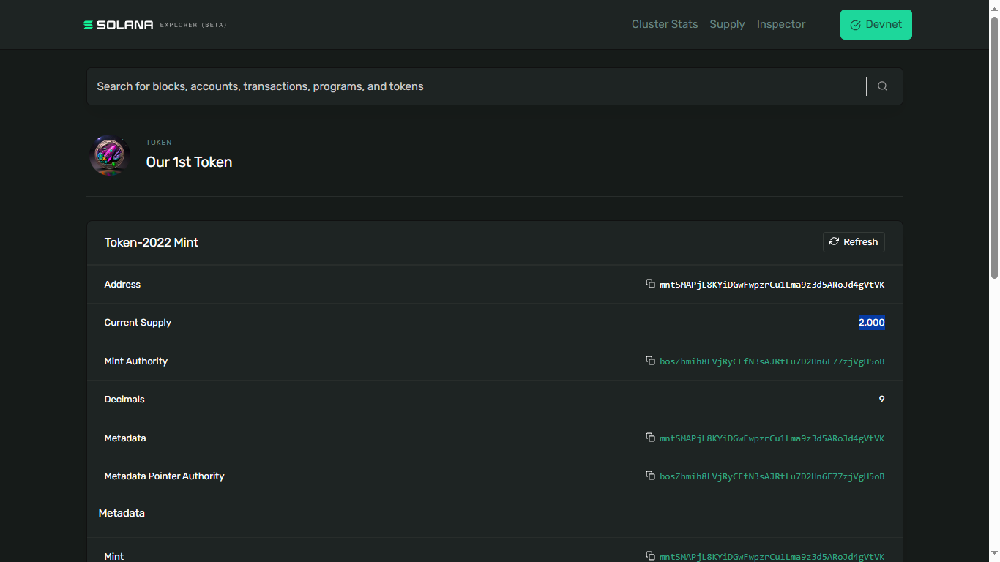

Making a Token
So let us make a token. We will be using the command-line tools here, but the concepts are exactly the same as if you are using the JavaScript or TypeScript tools.
We will also be using the new token program called Token extensions that features a bunch of useful features that we can add to our tokens. One of those is the metadata feature which allows us to have our metadata - all the things you see about the token like a name and description directly inside the token-mint. And if you do not know what that means, that is fine, all it means is that we we will be taking less time because we have less things to work on.
Before you proceed, check to make sure you already have the Solana command-line installed by using the command - $: solana --version. If you do have the Solana CLI installed, it would print out the version you have installed.
1.
Make a Mint-Authority' Public-Key inside a new directory for our token project
Let's make a new project directory called new-token
mkdir new-token
CD into directory new-token, and then create a mint-authority inside it using command
solana-keygen grind --starts-with bos:1
This command creates a keypair file called bos<generated-public-keypair-matching-your-private-key>.json for your mint-authority. Note that you can make your mint-authority start with any set of characters you choose.
If you think of a token-mint as a physical mint that prints tokens, you can think of the mint authority as being the boss of that mint. The mint-authority needs to sign all the transactions to mint its new tokens. If you are not the mint-authority, you cannot mint tokens fo the given mint.
2.
Switch your Solana Command-Line tools to use devnet
Upon running command $: solana config get, you should see an output showing you some info such as your RPC URL and WebSocket URL. If both do not have values - https://api.devnet.solana.com and wss://api.devnet.solana.com respectively, then it means you need to switch your config to devnet, which is what we will be using for this section. To switch to devnet, enter the command
solana config set --url devnet
Please take a note of your default Keypair Path value. You should copy it somewhere for possible future use. If you are using Linux or WSL, the default should be - /home/<user-name>/.config/solana/id.json.
3.
Make Solana use our new Mint-authoritty public-keypair file-name to sign all our transactions
We need to have our generated keypair.json filename copied, and then enter command
solana config set --keypair bos<generated-public-keypair-matching-your-private-key>.json
4.
Airdrop some Dev SOL
Now that we have created our mint-authority account that would be writing to the blockchain on devnet, we need to have some devnet SOL for our mint-authority account to use.
-
Go to faucet.solana.com and paste in our generated
bos<generated-public-keypair-matching-your-private-key>keypair / wallet address. -
Select the amount of SOL to airdrop on Devnet. You may choose 0.5 SOL. If for some reason, you do not see a prompt telling you airdorp successfull, you should give it a moment, maybe an hour or so before trying again.
-
Verify that your requested devnet SOL was received by entering command
$: solana balance. The SOL we just airdropped and received belongs to our Mint-Authority and it would use the SOL to create new accounts.
5.
Make a token-mint Public-Key
Similar to create our mint-authority, we would create our token-mint using this command
solana-keygen grind --starts-with mnt:1
This command creates a keypair file called mnt<generated-public-keypair-matching-your-private-key>.json for your token-mint. Note that you can make your token-mint start with any set of characters you choose. mnt was used just so we can remember that it is our mint.
Copy the generated keypair file-name we want to use the token-mint, as in mnt<generated-public-keypair-matching-your-private-key>.json for use in the next step of putting an actual token-mint inside the keypair.
6.
Put a token-mint in the generated token-mint Public-Key and establish a token
To put a token-mint inside a given keypair / address file, e.g, our mnt<generated-public-keypair-matching-your-private-key>.json file, we type out command
spl-token create-token --program-id TokenzQdBNbLqP5VEhdkAS6EPFLC1PHnBqCXEpPxuEb --enable-metadata mnt<generated-public-keypair-matching-your-private-key>.json
TokenzQdBNbLqP5VEhdkAS6EPFLC1PHnBqCXEpPxuEb inside the command above is the program ID of the token extensions program we use to create a token. --enable-metadata is an extension that would make our lives easier in providing meta-info like an image link, abbreviation, e.t.c, for our token. For more info about token-extensions, check out its Docs at - https://solana.com/developers/guides/token-extensions/getting-started.
If successful, you should see an output on your terminal that shows you an Address value, Decimals, and a Signature. There are 9 decimals because sending 1 SOL equals sending 1 billion Lamports. This command does establish your token, but does not mint it.
7.
We can now check out our established token inside Solana-Explorer
Go to https://explorer.solana.com, make sure you are on the Devent cluster, and paste in your Mint public keypair / wallet address, as in, mnt<generated-public-keypair-matching-your-private-key>.
Upon looking up our token-mint on Solana explorer, we can see some information about it. Our token has a Current Supply value of 0 because we have not minted any token yet.

For now, our token is also unknown because we did not provide any metadata for it. Let's fix that.
8.
Add meta-data to our established token
To add some meta-data to our established token, we are going to need to upload an image (to act like a favicon for our token), and a JSON file, somewhere public on the internet.
In our token's case, it is just a test token created for us to learn how to make a token. We can use GitHub as the public place on the internet to store the meta-data for our token instead of a decentralized store service which is the appropriate choice for a mainnet token. It is important to realize here that links to things such as the token's image, or JSON (meta-data) file has to just open the item, no HTML or anything else around.
-
Find an image and store it in a public space on the internet, e.g, GitHub, and have a raw link to it at hand. This is the image intended to be used as your token's favicon.
-
Create a JSON file named
token-metadata.jsonwhose content should have anamesymbol,description, and the raw-link to the image you intend to use as your token's thumbnail. It should generally look like this:
{
"name": "<Your-chosen-name-for-the-token>",
"symbol": "<Your token abbreviation-characters>",
"description": "<Your-token's-decription>",
"image": "<raw-link-to-your-token's-favicon-image>"
}
-
Upload the created
token-metadata.jsonfile to a public space on the internet as well, and have the raw URL to locate it at hand. -
After we have uploaded the JSON file created above to the internet, we go back to the terminal and attach the
token-metadata.jsonfile to our token with the URL to the file, by typing out command
spl-token initialize-metadata <mnt-generated-public-keypair-matching-your-private-key> '<Your-chosen-name-for-the-token>' '<Your token abbreviation-characters>' <raw-link-to-your-token-metadata.json-file>
If you see Error: AccountInvalidOwner, then it means that your "image" field inside your token-metadata.json file is not pointing to a URL that loads your image as a raw file without extra HTML whatsoever.
- Now go back to the Solana Explorer webpage, and click on the button that say 'Refresh' to see the token updated accordingly. Please note that the thumbnail and the corresponding name of the token may not update immediately, so fret-not if that happens.

In the above screenshot, we can see that Solana was able to go grab our metadata and add it to our token on the blockchain.
Sidenote: If we were making a token for Mainnet, a real serious production token, we would probably want to use a decentralized storage service somewhere like Arweave or IRIS - that is basicially kind of like a blockchain, but for JSON files, and images, and all that kind of stuff, rather than Solana which is a blockchain more suited for transactions like traditional blockchains. These decentralized storage services are designed to keep things online for a really long time because they are not owned by anybody and they are resilient to attacks. They are a good place to put something that you want to be around for a really long time.
9.
Mint our established token with our mint as its mint-authority
So great, we now have a token-mint and it looks nice. We can use this token-mint to mint our O1T tokens. Let us mint some tokens. And as the mint-authority, we can mint them into anyone's account. But let us mint some into our own mint-authority account first so that we can then transfer them out to other people's accounts if we like.
- Type out the command to create a PDA / an associated-token-account (for our token-mint account) so we can store our minted tokens with it
spl-token create-account <mnt-generated-public-keypair-matching-your-private-key>
- Use the appropriate command to actually mint any amount of our new tokens (in our case,
Our 1st Tokentokens) into our mint-authority account. Note that our mint-authority is the payer and signer for these transactions. Mint new tokens by typing out
spl-token mint <mnt-generated-public-keypair-matching-your-private-key> 2000
Let us now look at our token-mint account on Solana Explorer and our own personal (mint-authority) account (`
- Here is our token-mint account on Solana Explorer telling us how much of our
O1Ttoken is currently in total supply:

- And here is how much
O1Ttokens is in our mint-authority account when we searched for our mint-authority account on Solana Explorer, under theTokenstab:

There you go. You now have your very own first token. We can now do anything we these O1T tokens - we can transfer them, burn them, delegate them, and all the normal things we do with Solana tokens.
Timestamp - [03:37:02 - 03:49:11]